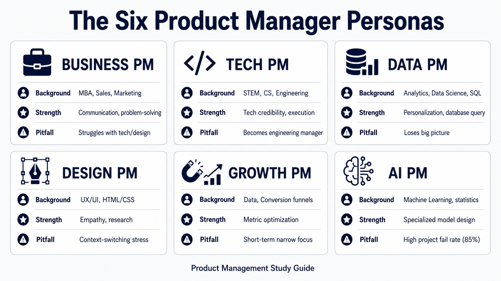
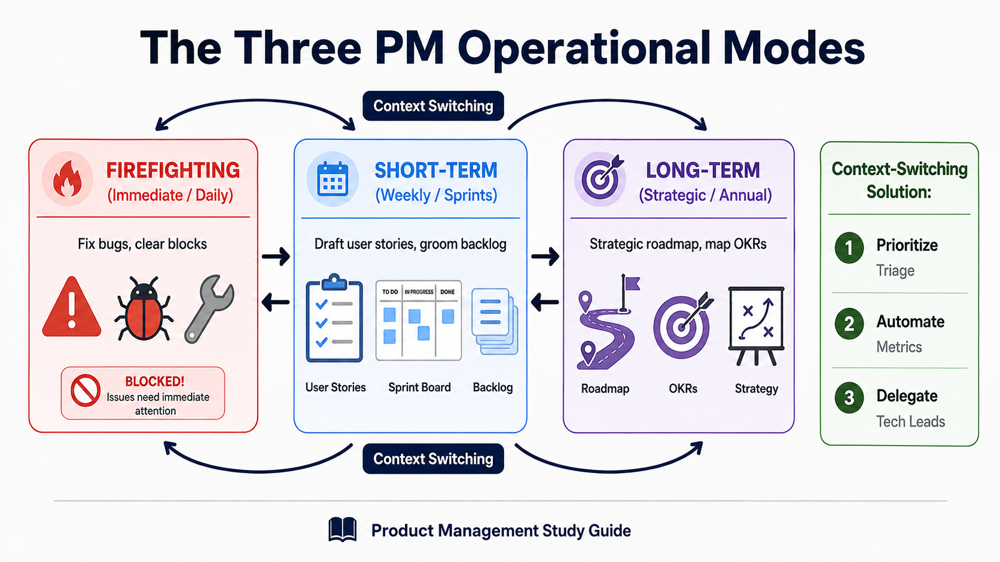
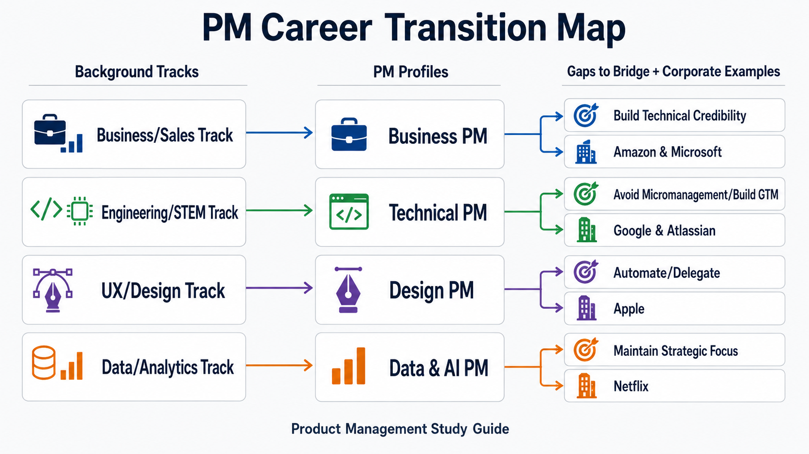

Your goal
Differentiate the six key product manager roles based on background, strengths, weaknesses, and companies, and describe the three daily operational modes (firefighting, short-term, long-term).
Lecture overview
Product management is a vast domain that cannot be encapsulated by a single job description. Because PMs come from diverse educational and professional pathways, their actual day-to-day responsibilities vary significantly. By the end of this lecture, you should be able to: Compare and contrast the six primary types of Product Managers; Identify typical strengths, pitfalls, target employers, and iconic leaders for each PM type; Describe the three operational modes (Firefighting, Short-Term, Long-Term) and explain how to manage context-switching bottlenecks; and Differentiate the scope and life cycle of a Data PM from that of a specialized AI PM.
Central argument
There is no single path or single definition for a Product Manager. The PM role varies dynamically based on the candidate's background, the company's business model (e.g., Product-Led Growth), and technology domains (e.g., Data/AI). Successful PMs leverage their specific backgrounds while actively working to bridge skill gaps—such as non-technical PMs building developer credibility or technical PMs avoiding the pitfall of micromanaging execution.
1. The Six PM Personas
The table below breaks down the six primary product manager roles based on background, core traits, common pitfalls, target employers, and exemplary industry leaders:

| PM Persona | Typical Background | Core Strengths | Key Pitfall / Weakness | Target Companies | Iconic Leader |
|---|---|---|---|---|---|
| Business PM | MBA, Sales, Marketing, Consulting | Strong problem-solving, communications, and strategic vision | Struggling with tech/design bounds; developer credibility issues | Amazon, Microsoft | Ken Norton (Google Ventures) |
| Tech PM | STEM degree, software engineering | Hands-on engineering support, high technical credibility | Acts as engineering manager; struggles with monetization/GTM | Google, Atlassian | Elon Musk (Tesla/SpaceX) |
| Data PM | Data science, analytics, SQL | Personalization at scale, analytical, queries databases | Gets caught in details; loses sight of the big picture | Netflix, Amazon, Google | Sebastian Thrun (Udacity) |
| Design PM | UX/UI design, frontend HTML/CSS | Deep user empathy, customer research, layout design | Struggles with massive context-switching and firefighting | Apple | Steve Jobs (Apple) |
| Growth PM | Data analysis, marketing experiments | Optimizing specific business metrics (funnels, freemium) | Narrow short-term focus; does not own entire product life cycle | Product-Led Growth (PLG) firms | Chamath Palihapitiya (Facebook Growth) |
| AI PM | Data science, machine learning | Specialized technical skills in classification/regression | High project failure rates (85% fail); long build loops | Google (over 4,000 ML projects) | Anthony Goldbloom (Kaggle) |
2. The Three Operational Modes (Context Switching)
Product Managers must constantly toggle between three distinct time horizons and execution modes. This context-switching is a primary source of cognitive load:
- Firefighting Mode (Immediate / Daily): Resolving unexpected blocks, fixing production bugs, or addressing immediate client escalation.
- Short-Term Mode (Weekly / Sprint): Planning upcoming sprints, writing immediate user stories, grooming the backlog, and aligning with developers/designers.
- Long-Term Mode (Quarterly / Annual): Building and communicating the product roadmap, defining OKRs, and aligning on product strategy.

Design PMs and Context-Switching
Design-background PMs are particularly susceptible to context-switching bottlenecks because design work typically demands long blocks of uninterrupted focus. When moving into a PM role, they must actively mitigate this stress by:
- Prioritizing: Running ruthless triage on immediate requests.
- Automating: Setting up automated reporting and metrics tracking dashboards.
- Delegating: Empowering tech leads or delivery teams to run execution checks independently.
3. Data PM vs. AI PM: The Specialized Data Pipelines
While closely related, Data PMs and AI PMs own different lifecycle stages and pipeline structures:
- Data Product Manager: Focuses on data collection, database querying (SQL), statistical analysis, and basic personalization engines (e.g., Netflix recommendations). Measures progress by dashboard availability, query performance, and user segmentation accuracy.
- AI Product Manager: Focuses specifically on Machine Learning (ML) initiatives, which account for over 99% of modern AI projects. Manages complex pipelines: Ideation ➔ Feature Development ➔ Data Management ➔ Experimentation ➔ Modeling. Must navigate high failure rates (only 15% of AI initiatives make it to production) and highly volatile, non-linear development timelines.
Practical Product Management example
Situation
A mobile-based subscription streaming app wants to increase its checkout conversion rate. The company employs both a core Video Player PM (a Tech/Design PM) and a Growth PM.
Decision
The Video Player PM focuses on the core product experience (reducing video load times, optimizing playback quality, redesigning subtitles). The Growth PM does not own the player. Instead, they own the Checkout Conversion Rate metric. The Growth PM runs a series of micro-experiments: testing a 7-day free trial pop-up, changing the layout of the billing page, and running email reminders for abandoned carts.
Reasoning
The Video Player PM requires deep uninterrupted design and engineering focus to deliver platform quality. The Growth PM operates on short-term micro-level cycles, running quick validation experiments to optimize the acquisition funnel without modifying core product infrastructure.
Consequence
While the core PM successfully delivers a 10% improvement in playback performance, the Growth PM increases the payment rate by 8% using checkout UI test variations.
Transferable lesson
Growth PMs focus on rapid conversion and metric loops rather than core product features, working side-by-side with traditional PMs to accelerate business returns.
Common misunderstandings
"Technical PMs should decide how the software is architected and write code alongside engineers."
Tech PMs who write code or dictate technical solutions are micromanaging. A PM's job is to define the "what" and "why" (problems and business goals), leaving the "how" (technical design, architecture, coding) to the Tech Lead and engineering team.
Decision consequence: Prevents team conflicts and establishes clear boundaries between product requirements and engineering design.
"Growth PMs own the long-term vision and lifecycle of the core product."
Growth PMs own metrics (e.g., retention rate, sign-ups), not products. They run short-term experiments on micro-funnels. A core product PM still owns the long-term product roadmap and value proposition.
Decision consequence: Avoids fragmented roadmaps and ensures metric optimization does not cannibalize user experience.
Key concepts and definitions
- Product-Led Growth (PLG)
- A business strategy that relies on self-serve product experience (freemium/trials) to drive user acquisition, activation, and retention.
- Context Switching
- The process of shifting cognitive focus between unrelated tasks or time horizons (e.g., switching from sprint planning to strategic roadmapping).
- Machine Learning (ML)
- A subfield of AI that uses algorithms to parse data, learn patterns, and make predictions (regression, classification, clustering).
- AI Product Pipeline
- The development loop of AI products: Ideation ➔ Feature Development ➔ Data Management ➔ Experimentation ➔ Modeling.
Key takeaways
- Textual Native Skills: Whether coming from MBA, engineering, or UX, utilize your native skills while identifying gap areas.
- Avoid Micromanagement: Tech PMs must define problems, not implement code or step on the Engineering Manager's toes.
- Protect Your Focus: Manage the three operational modes (Firefighting, Short-Term, Long-Term) by automating and prioritizing.
- Growth PMs Focus on Metrics: Growth PMs own metric optimization loops rather than feature suites or product life cycles.
- AI Projects Have High Fail Rates: AI PMs must manage long, non-linear pipelines where 85% of projects fail to reach production.
Visual summary

The career mapping flowchart traces candidates' raw backgrounds (CS, MBA, UX, DS) to the corresponding PM profiles and target companies (Google, Amazon, Apple, Atlassian), highlighting key gaps to resolve during transition.
One-minute review
Product management roles adapt to personal backgrounds and technical scopes. Business PMs excel at strategic communication, Tech PMs at developer alignment, Data PMs at metrics, Design PMs at user empathy, Growth PMs at funnel optimization, and AI PMs at ML model pipelines. To survive, PMs must balance three operational modes: immediate Firefighting, weekly Short-Term planning, and strategic Long-Term roadmapping. Managing context-switching and respecting role boundaries (like Tech PMs not micromanaging code) separates average teams from high-performing ones.
Interactive practice
Match PM Scenarios
Review the professional situations below and map them to the correct Product Manager role variation.
Scenario 1: "A candidate with an MBA background who excels at stakeholder presentation and business strategy but struggles to outline front-end architecture."
Scenario 2: "A PM who does not own the core feature suite, but instead runs continuous split testing and experiments to optimize user activation funnels."
Explore PM Operational Modes
Explore the three modes that dictate a PM's daily context-switching load: